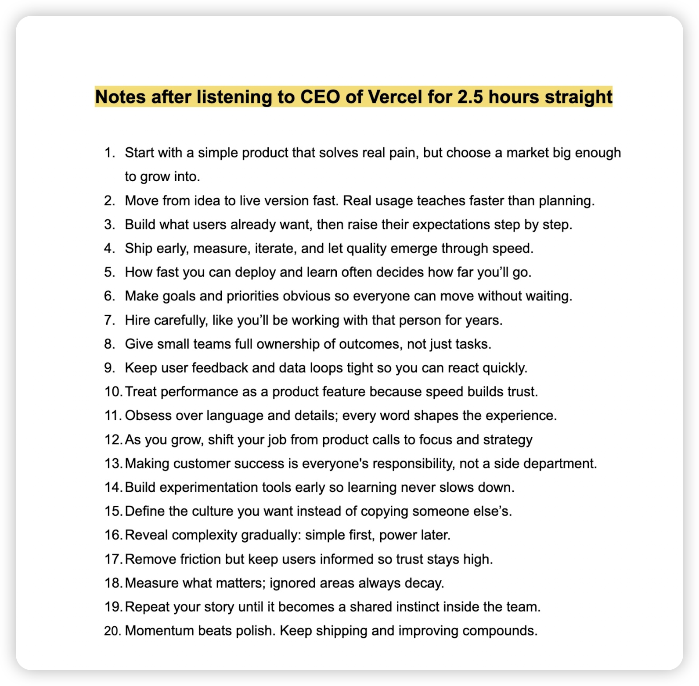

以事件为颗粒度，收录了一些产品哲学，希望对你有帮助！
PLG—霄凡分享
- Acquisition：
SEM(Search Engine Marketing)：付费流量
SEO(Search Engine Optimizing)：免费流量
SEO是为了获得机器青睐，必须要重视起来。核心：关键词（你是干什么的？）、权重。
效果：做了就有收获，coohom做了半年，就增长了10倍。
梳理出关键词、H标签等信息是产品经理的基本功，甚至可以利用热点词来获取流量。在SEO的过程中，是你了解产品最简单、最符合直觉的方式。
苏杰-AI产品创新
- AI产品创新会更大概率出现在硬件，用户与软件的交互需要载体；
- 工具型产品（携程）的价值会被降低，会管道化、会被AI代理掉；
- 交互范式会从用户->产品 到 用户->agent->产品，产品会退化为隐藏能力；
Pokee.ai 朱哲清
- 采用目标驱动式思考方式，而不是走一步看一步
- 强化学习模型本质上为决策而设计
- 别人的大语言模型，外面加一层RL层，做出来的agent无法达到商用级别的精度和鲁棒性
- 有一半的精力用于research，写代码
- 未来网络中的接口会是：Agent to Agent
Mike Krieger-红杉资本访谈
- AI产品区别于传统产品，其定义需要自下而上，最懂模型的人来做产品决策更合适；
Vibe Coding应该怎样做？
Vibe Coding的最佳实践仍然是Agile的版本迭代模式。例如你要做一个ERP系统，分成若干版本来迭代，每个版本都是独立稳定运行的。这样你基本可以保证，做出来的东西是可控的。
- v0.1: 一个可以运行的 Nextjs/TanStack 程序，有欢迎页面，可以跳转
- v0.1: 实现 users 相关数据库访问功能，在 mysql 中创建 users 表，实现 users 表的读写功能，添加读写功能的测试代码
- v0.2: 实现用户注册的网页，连接 users 相关数据库方法，能写入注册用户信息到数据库
- v0.3: 实现用户登录、注销的网页功能
- v0.4: 实现简单的 dashboard 页面
- v0.5: 实现 products 相关数据库访问功能，写功能代码和测试
- v0.6: 实现 products 在 dashboard 的管理页面，能显示列表
- v0.7: 实现 products 的添加、编辑和删除功能
Q：Waterfall的问题是什么？
A：瀑布流通常指的是各自开发很久、联调很久的情况

苹果和微信在AI上的落后？
苹果
Apple Intelligent的延期以及噱头大于实质的体验，很多YouTube数码KOL在不同程度上表达了对Apple Intelligent的失望。
微信
微信看起来做了很多AI动作，概括起来就两个层面。第一个层面，单一功能的AI化，例如公众号AI朗读、微信读书支持AI总结等；第二个层面，接入头部大模型产品，比如搜索接入deepseek、将元宝加入通讯录。
落后原因
- 两家公司对于隐私的重视
- 产品功能的克制，注重应用
2025.6.13 苹果高管圆桌
苹果AI哲学
Apple Intelligence不是一个聊天机器人(chatbot)，Siri也不是，苹果从来没想做聊天机器人。苹果的理念是将智能深度集成到所有平台的体验中(pervasive)，让它在用户需要的地方随时出现，而不是让用户“为了完成任务而去到一个专门的聊天界面”。它的意义在于让你每天做的事情变得更好。
Apple Intelligent三大亮点
- fundamental model framework：让三方开发者调用设备上的模型；
- 无处不在的实时翻译：诠释了AI集成到所有平台的体验中 这一理念；
- 屏幕视觉智能
微信的成功
小程序
2017年1月9日，十年前，乔布斯发布了第一代iPhone。小程序的走向可以用常用的Gartner曲线来形容，一开始引发无限的想象，热情和投入达到高点，然后在未达到预期后出清，接着再实现稳步的增长。微信的小程序有多么成功？看看支付宝和抖音的小程序吧。
视频号
视频号起初只有一二十人的团队。什么叫“大处着眼、小处着手”？（战术后仰）
“这是微信团队自己的一种风格，做一个新东西最好是一个小团队悄悄做，而不是大张旗鼓变成一个大项目，我们给自己目标，我们要做一定要做成它，所以这种压力是来自内在的，而不是任务式。” ———张小龙
起初，冷启动导致没有足够的内容可以推荐，一度陷入死循环。随后，微信开始了小步快跑动作，例如全面打通直播、公众号、小程序、视频号。
轻产品
轻产品是AI生成的产品，prompt就是PRD。轻产品是一种可交互的内容，和一篇文字、一个视频没本质区别，都是信息的呈现方式，他们之间可以轻松的互相转化，比如，帮儿子把一张需要背诵的单词表变成一个学英语的贪吃蛇小游戏。
Stanford 产品面试
- 面试问题：估算市场规模
拆解为多个piece：size of market->user segments->estimate the frequency of the action。采用自上而下或自下而上的估算方法。例如，美国汉堡市场规模有多少？可以拆解为：美国吃汉堡的人有多少？每人每天或每周平均吃几个汉堡？
- 面试问题：How would you design an oven for a person in a wheelchair?
不要直接设计产品功能，而是先从询问面试官需求开始（或者做假设，避免问过多的问题），包括：目标、挑战以及用户，再给出解决方案。解决方案中，包含优先级、权衡过程、MVP以及为什么
- 举一个产品失败的例子，以及团队如何处理及二次发布的
要举一个真实例子（可以将思路交给gpt润色为一个故事）面试官主要考察resilience和collaborative能力，以及你从中获得的成长
- 你如何衡量一个产品的成功？
要看产品的生命周期在哪个阶段。可以根据Pirate Metrics Framework(AARRR)来回答，即Aquisition、Activation、Retention、Revenue、Referral。
一些问题
Q：现有的AI编程产品为什么都是以 cli 的形态，例如 claude code Codex and gemini cli？cursor 、 windsurf 等通过代码编辑器的方式，为什么显得落后了？
Vercel CEO Talk

Gemini成功的背后—Woodward
Nano-banana 的多图融合带来的趣味性，让 gemini 的用户数腾飞， gemini 应用的月活跃用户从 3 月的 3.5 亿飙升到 10 月的 6.5 亿。这背后的战略是：避开时下火热但容易引发伦理争议的「AI 情感伴侣」方向，坚持将 gemini 定位为提升工作效率的超级工具。谷歌给 gemini 制定的考核标准并非用户粘性或时长，而是帮助用户完成了多少实际任务。
NotebookLM背后的 idea 来自于 Google labs 的一个产品经理，开发了一个 Project Tailwind 原型，支持用户上传文档、 PDF 、视频，然后由 AI 提炼要点、生成摘要和见解。 Woodward 发现后，认为这是很好的idea，于是，他决定让 4-5 个工程师和一个真正的作家碰在一起，做这款笔记软件。作家可以从职业写作者整理信息的工作流。
Claude Code揭秘—Boris&Cat
Claude Code起源
Boris在做原型的时候，想在终端中做一个小聊天应用。终端的优势是不用写 UI
然后他往里面加工具，给模型 bash 权限
Dual-use
很多 agent 架构的第一反应是给模型封装一堆工具，find_file, web_search, open_file。但Claude Code 核心就是 bash
原因有两个：一是用户体验更清晰——用户看到的输出，模型也能看到；二是权限管理更简单——如果用户的配置文件禁止读某个目录，bash层面就能统一拦截。
“工程师能做的事，Claude Code 都能做。”
模型在不断进化，工具越少越好。
内部如何使用 Claude Code
Slash Commands
- /commit 和 /pr
- /feature-dev
- /code-review
- /security-review
预设允许的工具调用权限，不需要每次 allow
bash mode
! 竟然是Claude 自己想出来的办法
plan mode
模型与用户对齐需求
一种反直觉使用方式
当你不确定要什么的时候，让 Claude 先跑一遍，看它怎么做、哪里出错，用这些错误想清楚真正的需求。
什么时候用 subagent
- 大规模迁移，map-reduce（先分发任务，再汇总结果）
- code-review，每个 subagent 检查安全、性能、过度设计等不同维度
subagent 的价值在于不相关的context window
Compound Engineering
这是Every团队实践出来的核心理念：在传统工程中，每加一个功能，下一个功能就更难做；在compound engineering中，每加一个功能，下一个功能反而更容易。
秘诀在于，每次开发教训回馈到系统里：
- 模型每犯一个错误，写进 Claude.md
- 反复检查的规则，让 Claude 写成 lint rule
- 测试用例，100%由 Claude 编写
advice for builder
-
solve your own problem
-
latent demand
-
克制的产品功能
Q&A
Q1: Claude Code和其他AI编程工具的本质区别是什么？
区别在于权限层级。Copilot和Cursor是"建议者"，活在IDE里，只能看到你展示的内容；Claude Code是"同事"，直接在终端里运行bash，拥有和你一样的系统权限。你定义目标，它处理实现。
Q2: 如何判断什么任务该用plan mode？
标准很简单：以前需要几小时工程时间的任务，用plan mode。能一次搞定的就直接说。如果你不确定，让Claude先跑一遍看它怎么失败，用失败来帮你写更好的规格说明。
Q3: Anthropic内部70%工程师日用Claude Code，他们的核心工作流是什么？
四步循环：Plan（agent读issue、研究方案、输出计划）→ Work（agent写代码和测试）→ Review（人类审查输出和教训）→ Compound（把教训写回系统，让下次更好）。
Manus 季逸超采访
Manus 灵感💡
看到很多非工程师用 cursor 写博客、做调研，但 cursor 太专业了，我们就想做一个通用的 agent 。
为什么做通用 agent
Manus 的本质是：通用模型+计算机，每个 session 背后都有一个单独隔离的虚拟机沙盒。底层这两个技术供给是通用的，走垂直就是在上面加约束。
我们做通用 agent ，用户会做各种各样的任务，慢慢地我们发现用户喜欢做 slides，那就让产品团队优化这个方向。
第二，我们想解决长尾 query，一旦长尾问题被解决，用户对产品的信任度就会更高。
第三，agent 太聚焦意味着使用场景窄，使用频次就会低。
主流大模型各自的优势
Manus应用做得好， tokens 使用量大，就可以给模型厂商提需求，从而减少自己 research 的带宽。
各家大模型各有优势。anthropic 的 agentic coding 还是最好的；gemini在多模态的理解，多模态的输入方面断层级领先，同时 Google 还有些资源优势；openAI在纯推理方面的reasoning领先很多；
Manus 优势究竟是什么
- 能根据不同场景，提供不同模型，始终给用户提供最好的体验；
- 模型厂商一旦是垂直整合的，迭代速度一定没有 Manus 快；
Q：为什么大模型公司做分化，而应用层公司做综合？
A：这和模型公司的基因有关。智能的提升是依赖用户数据的，尤其是 agent 这类长链路的，用户是非常关键的。用户的使用轨迹、 feedback 是留在应用层，而不是模型层，应用层公司（windsurf 、cursor）都有自己的数据飞轮，未来他们会以模型的形式体现出产品可以持续迭代。
Manus 用户画像
- 互联网公司里非程序员、远程工作者
- freelancer 、solo-entrepreneur
- 金融和咨询行业的人
agent 背后不是工具，而是一个人
Manus 数据飞轮
-
基于collective feedback 达到一种在线学习的效果；
chatbot 输出不满意的结果时，用户会 retry 或修改提示词。但当agent失败时，用户会教 agent 怎么怎么做，系统就获得了更多的用户共识。这个过程，不涉及修改模型，parameter-free。
-
基于用户最朴素的反馈（人为打分 1-5 星）；
agent 的自动Evaluation还有很多要改善的。Evaluation 好的并不一定受用户欢迎。比如，用户希望这个网站是好用、易用的，这个没办法 verify 。
Manus关注的几个指标
先后顺序
- coding 能力
- browser use（多模态能力）
- 广义的 tool call
还有一些无法追踪的指标，比如一个很有意思的，模型意识到错误的能力。
错误分为低纬度、高纬度两种。低纬度是指，写代码修复 bug 的时候引入另一个 bug；高纬度是指，做出来一个可用的东西，但不好用。Manus 应对这种错误的方式是：再往前做一步。例如，Manus 做完一个网页，并没有结束，而是自己用浏览器玩一圈，去校验数据正确性。
Point0
AI 产品同最新大模型一起发布，这种策略叫模型的溢出
Point1
产品驱动比技术驱动，整体节奏会更快。产品迭代成本更低，可以先发出去看看有没有什么问题；而技术/模型上要更慎重，比如模型训练中的 training run，按一下要几十万美金。
Point2
开发 agent 不就是Context Engineering 嘛（战术后仰）
Point3
Monica 类似于生鱼片，几乎不加工；Manus 类似于水煮鱼。
chatbot核心要素是用户和模型，用往复的方式去交互；agent 多了一个 runtime，runtime 极其复杂。
Point4
AI让生产力大幅提升，不做什么显得尤为重要。很多 agent 都在想增加什么 tool，而 Manus 在想这个 tool 能不能去掉。
Point5
Manus包含三部分：用户、 runtime 、模型， 其中runtime最重要，Manus 选择的是一台虚拟机，一次性的沙盒。
- Sandbox Scaling非常重要，决定了agent 的并行能力。
- 没选择 Docker 这种绑定 Linux 的容器技术，而是firecracker进行虚拟化，所以 Manus 可以操作 Windows
Point6
chatbot估价：基于input tokens 和 output tokens成本去计算。input tokens 是 prefilled 的，可以并行计算；而 output tokens 是 decoding，成本更高。 in/out一般按 3:1计算
Manus根据 task type，它的 in/out 一般在 100:1 到 1000:1之间浮动
Point7
对于太长的上下文，要让模型具有compress awareness
Point8
Universal agent，把输入交给用户；Vertical agent，要在输入上做很多功课。
未来，垂直领域的 agent 会百花齐放，尤其是 ToB，北美更喜欢做 ToB 。
Point9
做 agent 的思路：给剪辑师做一个剪辑 agent 非常困难，整个剪辑 workflow 但凡有一个环节不通，那就是 0。所以应该做一个给非剪辑师但却有剪辑需求的人做的agent。
enhance people instead of replace people
Point10
Manus 服务的是有高价值需求的用户，与使用 chatbot的用户不冲突。Agent 用户是 Chatbot 用户的子集。